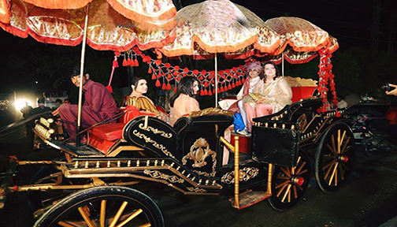
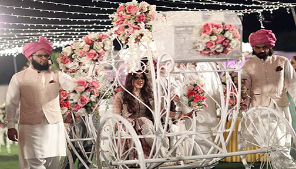
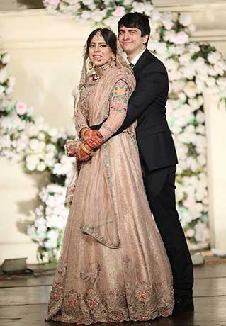
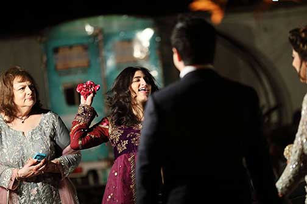

The Barat is the reception of the groom, his family, and his relatives that take place
after the Nikah. This event was arranged by the family of the bride. Arrangements
included the wedding hall, food, and photography.
Here we arrived on a horse-drawn carriage taking us to the Nikah reception event. As we got closer to
the hall we were surrounded by the beat of drums. Solaman wore a traditional sherwani which is a
knee-length coat buttoning to the neck and pink turban.

Here is where the bride arrived in a carriage being led by her two brothers.
Rukhsati

This is the main function when the groom and his family take the bride to their home.
After
dinner, the bride leaves with the groom’s family which is called ‘Rukhsati’ this was most sentimental
time
of the wedding.
Click to
view
Rukhasati Facebook
Album
top
Walima

The Walima was the last formal event which is hosted by the bridegroom and his family.
This is a way of welcoming Sasha and her family into our family; the celebration includes relatives and
friends as the guests of both families. There is food served and entertainment during this occasion.
Our family greeted guests by throwing roses over their heads. Our family also present
garland to the bride's Mother and Father which is worn around the necks. When Solaman and Sasha
arrived,
Sidra my youngest
daughter was given the basket of roses to throw at the bride and groom. But rather than throwing
over
their head she being
mischievous, took handfuls and threw right at her brother getting flower peddles in his hair.
Click to
view more pictures located in the Walima Album on Facebook.
top